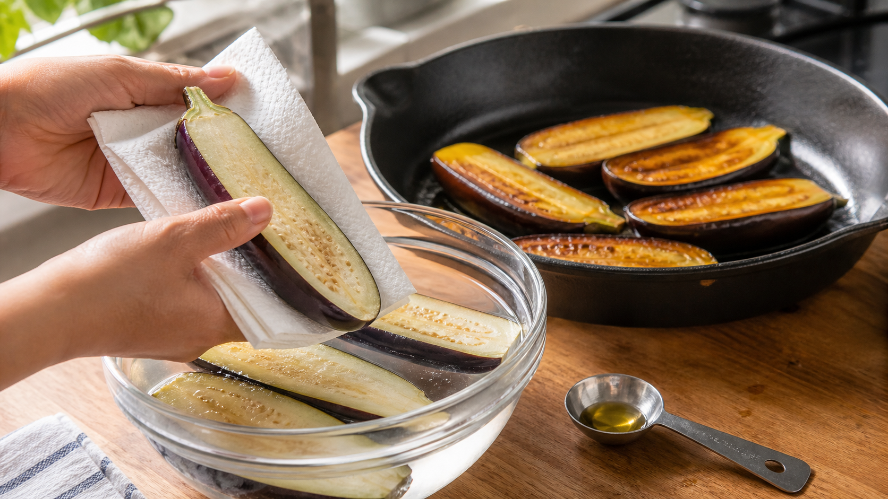

なすに塩を振れば、油は減る？ 答えは「塩」より、その後の水切り
なすをフライパンへ入れた途端、さっきまであった油が消える。
慌てて油を足すと、今度は皿の底が油っぽい。なすは本当に「油を吸うスポンジ」のようだ。
そこでよく聞くのが、「先に塩を振れば、油を吸いにくくなる」という方法だ。これは半分正しい。ただし、塩を振っただけで自動的に油が減る、と考えるのは早い。
今日の結論
塩の前処理には、なすの水を外へ動かし、組織を縮ませる理屈がある。実際に、4〜4.2％の塩水へ20〜30分つけ、よく水を切ってから揚げる条件では、無処理より油が少なかった研究がある。
ただし、家庭で表面へ塩をぱらぱら振る方法そのものを、同じ切り方と火加減で十分に比べた研究は確認できなかった。だから「ひとつまみで必ず油が減る」とは言えない。
試すなら、塩の量と時間を決める。そして最後に表面をしっかり乾かす。ここまでを一つの操作として考えるのが近道だ。
なすの中には、油が入れる小さな通り道がある
なすの果肉は、細胞の間に空間が多く、やわらかい。加熱で水が動き、組織が弱くなると、その空間や表面へ油が入り込む。
食品の細い隙間へ液体が引き込まれる動きを毛細管現象（もうさいかんげんしょう）と呼ぶ。乾いたスポンジの端を水へ触れさせると、水が内側へ上がっていくのに少し似ている。
揚げ物の油の入り方を整理した研究レビューでは、油の量は水が抜けた分だけでは決まらず、食品の空洞、表面へ付く油、油から引き上げた後の冷却などが関係するとされている。なすは水分が残っていても油を多く抱えやすく、その弱く多孔質な組織が理由の一つと考えられている。
つまり、「水を抜けば、その穴へ油が同じ量だけ入る」という単純な入れ替えではない。塩で水分を動かした後、組織がどれだけ縮み、表面の水をどれだけ除き、どんな温度で加熱したかまで効いてくる。
塩は、水を引き出すだけではない
濃い塩水へなすを入れると、内側と外側の濃さの差を小さくしようとして、水が果肉から外へ動く。この水の移動を浸透圧（しんとうあつ）による脱水と呼ぶ。
水が出ると果肉は少し縮み、細胞の間にあった大きな空間もつぶれやすくなる。油が入り込める道を狭くする可能性がある一方、強すぎる塩水や長すぎる時間は、塩辛さや食感の変化につながる。
2020年のなすの調理比較では、厚さ12〜16mmの輪切りを4.2％の塩水へ30分つけ、ざるで15分水を切ってから125℃の油で揚げた。5回の試行で、調理1時間後の脂質割合は、無処理の揚げなすが16.98％、塩水処理は9.02％だった。12人の官能評価では、塩水処理したなすのムサカが最も好まれた。
別のなすリングの一次研究でも、25℃の4％食塩水へ20分つけた前処理を含めて比較し、塩水処理は無処理より油の取り込みが少なく、食感の評価も良かったと報告している。
ただし、どちらも深い油で揚げる試験だ。品種、輪切りの厚さ、油温、油を切る時間が違えば数字は動く。家庭のフライパンで塩を直接振る方法へ、9.02％という値をそのまま移すことはできない。
家庭では「4％塩水」で条件をそろえる
塩を振ると、場所によって濃さが変わる。研究に近い条件から試すなら、塩水にしたほうが再現しやすい。
材料（2人分）
- なす 2本（約160〜200g）
- 水 300g
- 塩 12g
- 植物油 12g
- 仕上げのしょうゆ 小さじ1
- おろししょうが 少量
作り方
- なすは流水で洗い、清潔な布かペーパーで拭く。へたを落とし、縦半分に切って、皮へ浅く斜めの切り込みを入れる。
- 水300gへ塩12gを溶かす。これで4％塩水になる。なすを20分つけ、途中で一度上下を返す。
- ざるへ上げて5分置く。塩味を控えたい場合は表面だけをさっと流水ですすぐ。その後、切り口と皮の水分をペーパーで丁寧に拭く。
- フライパンへ油12gを入れ、中火で温める。なすの切り口を下にして並べ、2分焼く。
- 裏返し、水大さじ1を加えてふたをする。弱めの中火で3〜4分蒸し焼きにする。箸がすっと通ったら火を止める。
- しょうゆとしょうがをからめる。塩水処理をしているので、味を見てから追加の塩を決める。
この手順は、研究と同じ「深い油で揚げる」再現ではない。塩水で組織を変えたうえで、最初から油の量を決め、途中で足さない家庭向けの使い方だ。
半分だけ比べると、塩の仕事が見える
なす1本を縦半分に切り、片方を4％塩水、もう片方を真水へ20分つける。両方を同じように水切りして拭き、同じ重さの油で別々に焼く。
比べるのは、焼き始めに油が見えなくなる速さ、焼き上がりの重さ、果肉のやわらかさ、塩味の四つ。油の吸収量を正確に測る実験ではないが、自分が使う品種とフライパンで、前処理が扱いやすさを変えるかは見える。
なお、同じ2020年の研究では、油を吹き付けて160℃のオーブンで45分加熱した方法が、深い油で揚げる方法より脂質割合が低かった。ただし加熱法そのものが違うため、塩だけの効果とは比較できない。油の総量を確実に抑えたいなら、塩の効果に頼り切らず、使う油を最初に量るほうがぶれにくい。
水気を残したまま、熱い油へ入れない
塩水から出したなすは、表面の水を必ず拭く。水滴が多いと、熱い油へ入れたときにはねやすい。深い油で揚げる場合は、特に水切りと乾燥を省かない。
米国食品医薬品局は、生鮮野菜を切る前に流水で洗い、清潔な布やペーパーで乾かすよう案内している。石けんや洗剤は使わない。
作ったなすをすぐ食べない場合は、室温へ長く置かず、粗熱が取れたら冷蔵する。塩水処理は保存性を保証する操作ではない。
塩は魔法ではなく、下準備の一部
確認できた研究から言えるのは、「決めた濃さの塩水につけ、水を切ったなすは、無処理より油が少なくなる場合がある」までだ。
塩を振るだけでは、濃さも時間も水切りもそろわない。だから結果がぶれやすい。
まずは水300gに塩12g、20分。よく拭き、油12gを足さずに焼く。
次の一皿では、油を継ぎ足す前に、塩と水切りがなすをどう変えるかを半分だけ比べてみよう。
参考文献
- Şen MA. *Oil Absorption Rates of Eggplants Fried with Different Methods and Status of Being Liked of this is Eggplant Moussaka Made with Eggplants by Consumers*. Journal of Tourism & Gastronomy Studies. 2020;8(4):2588-2602. https://doi.org/10.21325/jotags.2020.728
- Eissa HA, Ramadan MT, Ali H, Ragab GH. *Optimizing Oil Reduction in Fried Eggplant Rings*. Journal of Applied Sciences Research. 2013;6(9):3708-3717. https://www.researchgate.net/publication/268011199_Optimizing_Oil_Reduction_in_Fried_Eggplant_Rings
- Ziaiifar AM, Achir N, Courtois F, Trezzani I, Trystram G. *Review of mechanisms, conditions, and factors involved in the oil uptake phenomenon during the deep-fat frying process*. International Journal of Food Science & Technology. 2008;43(8):1410-1423. https://doi.org/10.1111/j.1365-2621.2007.01664.x
- Khalilian S, Mba OI, Ngadi MO. *g-Frying of eggplant (Solanum melongena L.)*. Journal of Food Engineering. 2021;293:110358. https://doi.org/10.1016/j.jfoodeng.2020.110358
- U.S. Food and Drug Administration. *7 Tips for Cleaning Fruits, Vegetables*. https://www.fda.gov/consumers/consumer-updates/7-tips-cleaning-fruits-vegetables
※本記事は家庭調理の食感と油の使い方を扱う一般情報であり、病気の予防や治療効果を示すものではない。減塩が必要な人は、塩水処理後にすすぐ、または塩を使わず油量を決めて焼く方法を選ぶこと。